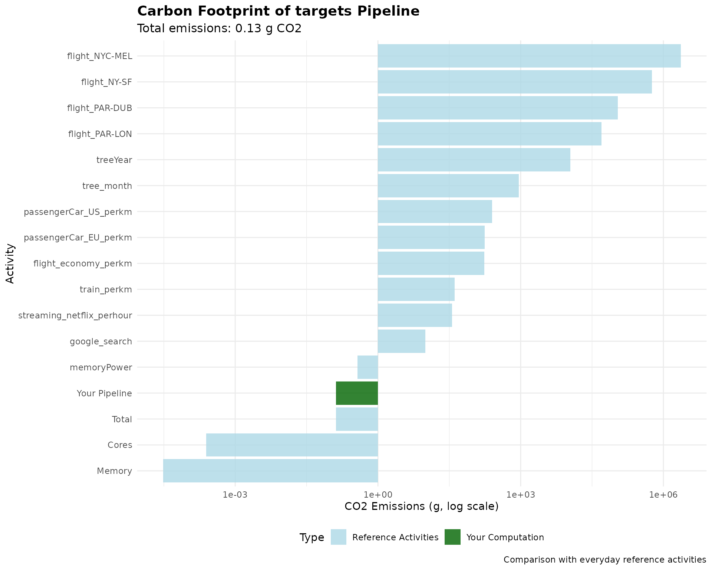

Using greenAlgoR with targets Pipelines
Adrien Taudière
2025-09-24
Source:vignettes/targets-integration.Rmd
targets-integration.RmdIntroduction
The targets package (landau_targets_2021?) provides
a powerful framework for reproducible computational workflows in R. The
greenAlgoR package seamlessly integrates with
targets to help you understand the environmental impact of
your entire data analysis pipeline.
This vignette demonstrates how to:
- Calculate carbon footprint for complete
targetspipelines - Identify the most carbon-intensive steps in your workflow
- Optimize pipelines for environmental efficiency
Basic targets Integration
The ga_targets() function analyzes your
targets pipeline and calculates the total carbon footprint
based on:
- Runtime of each target
- Memory usage patterns
- Storage requirements (optional)
Simple Example
# Create a simple targets example
tar_dir({ # tar_dir() runs code from a temp dir for CRAN compatibility
# Define a simple pipeline
tar_script(
{
library(targets)
list(
tar_target(
name = data_prep,
command = {
# Simulate data preparation (2 seconds)
Sys.sleep(2)
data.frame(x = rnorm(1000), y = rnorm(1000))
}
),
tar_target(
name = analysis,
command = {
# Simulate analysis (1 second)
Sys.sleep(1)
lm(y ~ x, data = data_prep)
}
),
tar_target(
name = visualization,
command = {
# Simulate plotting (0.5 seconds)
Sys.sleep(0.5)
plot(data_prep$x, data_prep$y)
"plot_completed"
}
)
)
},
ask = FALSE
)
# Run the pipeline
tar_make()
# Get metadata
metadata <- tar_meta()
print(metadata[, c("name", "seconds", "bytes")])
# Calculate carbon footprint
pipeline_footprint <- ga_targets(
tar_meta_raw = metadata,
location_code = "WORLD",
n_cores = 2,
TDP_per_core = 15,
memory_ram = 8
)
cat(
"Pipeline carbon footprint:",
pipeline_footprint$carbon_footprint_total_gCO2, "g CO2\n"
)
cat("Total runtime:", pipeline_footprint$runtime_h * 3600, "seconds\n")
})
#> + data_prep dispatched
#> ✔ data_prep completed [2s, 15.52 kB]
#> + analysis dispatched
#> ✔ analysis completed [1s, 47.54 kB]
#> + visualization dispatched
#> ✔ visualization completed [533ms, 67 B]
#> ✔ ended pipeline [3.7s, 3 completed, 0 skipped]
#> # A tibble: 3 × 3
#> name seconds bytes
#> <chr> <dbl> <dbl>
#> 1 data_prep 2.00 15523
#> 2 analysis 1.00 47544
#> 3 visualization 0.533 67
#> Pipeline carbon footprint: 0.02572536 g CO2
#> Total runtime: 3.54 secondsAdvanced Pipeline Analysis
For more complex pipelines, you can get detailed insights:
tar_dir({
# Create a more complex pipeline
tar_script(
{
library(targets)
simulate_computation <- function(duration, size = 1000) {
Sys.sleep(duration)
matrix(rnorm(size * size), nrow = size)
}
list(
tar_target(small_task, simulate_computation(0.5, 100)),
tar_target(medium_task, simulate_computation(2, 500)),
tar_target(large_task, simulate_computation(5, 1000)),
tar_target(
combined_analysis,
{
# Combine results
result <- list(
small = summary(small_task),
medium = summary(medium_task),
large = summary(large_task)
)
Sys.sleep(1) # Additional processing time
result
}
)
)
},
ask = FALSE
)
tar_make()
metadata <- tar_meta()
# Calculate footprint with storage estimation
detailed_footprint <- ga_targets(
tar_meta_raw = metadata,
location_code = "FR", # France has relatively low carbon intensity
n_cores = 4,
TDP_per_core = 20,
memory_ram = 16,
add_storage_estimation = TRUE
)
# Display breakdown
cat("Total CO2 emissions:", detailed_footprint$carbon_footprint_total_gCO2, "g\n")
cat("CPU contribution:", detailed_footprint$carbon_footprint_cores, "g\n")
cat("Memory contribution:", detailed_footprint$carbon_footprint_memory, "g\n")
if (!is.null(detailed_footprint$power_draw_storage_kWh)) {
storage_co2 <- detailed_footprint$carbon_intensity * detailed_footprint$power_draw_storage_kWh
cat("Storage contribution:", storage_co2, "g\n")
}
})
#> + large_task dispatched
#> ✔ large_task completed [5s, 7.68 MB]
#> + medium_task dispatched
#> ✔ medium_task completed [2s, 1.92 MB]
#> + small_task dispatched
#> ✔ small_task completed [502ms, 76.87 kB]
#> + combined_analysis dispatched
#> ✔ combined_analysis completed [1.4s, 49.99 kB]
#> ✔ ended pipeline [9.5s, 4 completed, 0 skipped]
#> Total CO2 emissions: 0.0182604 g
#> CPU contribution: 0.0169924 g
#> Memory contribution: 0.001265934 g
#> Storage contribution: 2.065548e-06 gComparing Different Configurations
You can compare how different hardware configurations affect your pipeline’s carbon footprint:
tar_dir({
# Use the same pipeline as above
tar_script(
{
library(targets)
simulate_computation <- function(duration, size = 1000) {
Sys.sleep(duration)
matrix(rnorm(size * size), nrow = size)
}
list(
tar_target(task1, simulate_computation(1, 200)),
tar_target(task2, simulate_computation(2, 300)),
tar_target(task3, simulate_computation(1.5, 250))
)
},
ask = FALSE
)
tar_make()
metadata <- tar_meta()
# Compare different configurations
configs <- data.frame(
Config = c("Laptop", "Desktop", "Server"),
Cores = c(2, 8, 16),
TDP = c(10, 15, 25),
RAM = c(8, 16, 64),
Location = c("WORLD", "FR", "NO") # Different locations
)
# Calculate footprint for each configuration
configs$CO2_emissions <- mapply(function(cores, tdp, ram, loc) {
ga_targets(
tar_meta_raw = metadata,
n_cores = cores,
TDP_per_core = tdp,
memory_ram = ram,
location_code = loc
)$carbon_footprint_total_gCO2
}, configs$Cores, configs$TDP, configs$RAM, configs$Location)
print(configs)
})
#> + task1 dispatched
#> ✔ task1 completed [1s, 307.24 kB]
#> + task2 dispatched
#> ✔ task2 completed [2s, 691.03 kB]
#> + task3 dispatched
#> ✔ task3 completed [1.5s, 480.03 kB]
#> ✔ ended pipeline [4.7s, 3 completed, 0 skipped]
#> Config Cores TDP RAM Location CO2_emissions
#> 1 Laptop 2 10 8 WORLD 0.02286206
#> 2 Desktop 8 15 16 FR 0.01352859
#> 3 Server 16 25 64 NO 0.00676439Visualizing Pipeline Carbon Footprint
Create comprehensive visualizations of your pipeline’s environmental impact:
tar_dir({
# Create pipeline and get footprint with reference values
tar_script(
{
library(targets)
list(
tar_target(data_load, {
Sys.sleep(1)
rnorm(5000)
}),
tar_target(preprocessing, {
Sys.sleep(3)
scale(data_load)
}),
tar_target(modeling, {
Sys.sleep(5)
lm(data_load ~ seq_along(data_load))
}),
tar_target(postprocessing, {
Sys.sleep(2)
summary(modeling)
})
)
},
ask = FALSE
)
tar_make()
metadata <- tar_meta()
pipeline_result <- ga_targets(
tar_meta_raw = metadata,
location_code = "WORLD",
n_cores = 4,
memory_ram = 16,
add_ref_values = TRUE
)
# Create comprehensive visualization
ref_data <- pipeline_result$ref_value
ref_data$category <- "Reference Activities"
# Add pipeline data
pipeline_data <- data.frame(
variable = "Your Pipeline",
value = pipeline_result$carbon_footprint_total_gCO2,
prop_footprint = NA,
category = "Your Computation"
)
# Combine data
plot_data <- rbind(
ref_data[, c("variable", "value", "category")],
pipeline_data[, c("variable", "value", "category")]
)
plot_data$value <- as.numeric(plot_data$value)
# Create the plot
ggplot(plot_data, aes(
x = reorder(variable, value), y = value,
fill = category
)) +
geom_col(alpha = 0.8) +
scale_fill_manual(
values = c(
"Reference Activities" = "lightblue",
"Your Computation" = "darkgreen"
),
name = "Type"
) +
scale_y_log10() +
coord_flip() +
labs(
title = "Carbon Footprint of targets Pipeline",
subtitle = paste(
"Total emissions:",
round(pipeline_result$carbon_footprint_total_gCO2, 2),
"g CO2"
),
x = "Activity",
y = "CO2 Emissions (g, log scale)",
caption = "Comparison with everyday reference activities"
) +
theme_minimal() +
theme(
legend.position = "bottom",
plot.title = element_text(size = 14, face = "bold"),
plot.subtitle = element_text(size = 12)
)
})
#> + data_load dispatched
#> ✔ data_load completed [1s, 38.47 kB]
#> + modeling dispatched
#> ✔ modeling completed [5s, 238.68 kB]
#> + preprocessing dispatched
#> ✔ preprocessing completed [3s, 38.59 kB]
#> + postprocessing dispatched
#> ✔ postprocessing completed [2s, 77.94 kB]
#> ✔ ended pipeline [11.2s, 4 completed, 0 skipped]
Target-Level Analysis
For detailed optimization, you might want to analyze individual targets:
tar_dir({
tar_script(
{
library(targets)
list(
tar_target(quick_task, {
Sys.sleep(0.5)
"done"
}),
tar_target(slow_task, {
Sys.sleep(10)
"done"
}),
tar_target(memory_intensive, {
# Simulate memory-intensive task
big_matrix <- matrix(rnorm(1000 * 1000), nrow = 1000)
Sys.sleep(3)
summary(big_matrix)
})
)
},
ask = FALSE
)
tar_make()
metadata <- tar_meta()
# Analyze each target separately
target_analysis <- data.frame(
Target = metadata$name,
Runtime_sec = metadata$seconds,
Memory_MB = metadata$bytes / (1024^2),
stringsAsFactors = FALSE
)
# Calculate individual footprints (simplified)
target_analysis$CO2_estimate <- sapply(metadata$seconds, function(sec) {
ga_footprint(
runtime_h = sec / 3600,
n_cores = 2,
memory_ram = 8
)$carbon_footprint_total_gCO2
})
print(target_analysis)
# Identify the most carbon-intensive target
most_intensive <- target_analysis[which.max(target_analysis$CO2_estimate), ]
cat(
"\nMost carbon-intensive target:", most_intensive$Target,
"(", round(most_intensive$CO2_estimate, 3), "g CO2 )\n"
)
})
#> + memory_intensive dispatched
#> ✔ memory_intensive completed [3.3s, 31.13 kB]
#> + quick_task dispatched
#> ✔ quick_task completed [501ms, 57 B]
#> + slow_task dispatched
#> ✔ slow_task completed [10s, 57 B]
#> ✔ ended pipeline [13.9s, 3 completed, 0 skipped]
#> Target Runtime_sec Memory_MB CO2_estimate
#> 1 memory_intensive 3.281 2.968979e-02 0.019505440
#> 2 quick_task 0.501 5.435944e-05 0.002978429
#> 3 slow_task 10.011 5.435944e-05 0.059515075
#>
#> Most carbon-intensive target: slow_task ( 0.06 g CO2 )Best Practices for Sustainable Pipelines
-
Profile your pipeline: Use
tar_meta()to identify bottlenecks - Optimize slow targets: Focus on reducing runtime of carbon-intensive steps
-
Cache efficiently: Use
targetscaching to avoid re-running expensive computations - Choose appropriate hardware: Match computational resources to task requirements
- Consider location: Run pipelines in regions with cleaner energy if possible
Integration with Workflow
Include carbon footprint reporting as part of your standard pipeline:
# Add to your _targets.R file
tar_target(
pipeline_footprint,
{
# Calculate footprint after pipeline completion
footprint <- ga_targets(location_code = "FR")
# Log the results
cat(
"Pipeline carbon footprint:",
footprint$carbon_footprint_total_gCO2, "g CO2\n"
)
# Save for reporting
saveRDS(footprint, "results/carbon_footprint.rds")
footprint
}
)Conclusion
Integrating greenAlgoR with targets
provides a powerful way to understand and optimize the environmental
impact of your computational workflows. By regularly monitoring carbon
footprint, you can make informed decisions about computational
efficiency and contribute to more sustainable research practices.